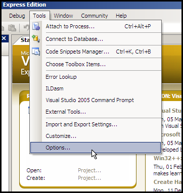
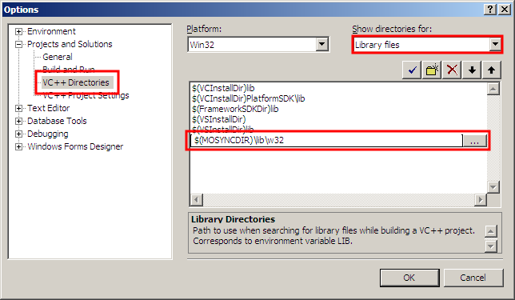
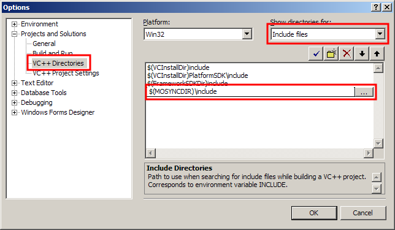

You can use MoSync with Microsoft Visual Studio although, of course, much of the functionality concerning building for mobile devices will be lost this way. The gain is that you will be able to use the fully-featured debugger in Visual Studio. Here we describe how to set up Visual Studio, and how to use it to build and debug an application.
It is only possible to use Microsoft Visual Studio C++ 2005 Express Edition at this time. You will also need the Microsoft Windows Server 2003 SP1 Platform SDK.
Our win32 library for Visual Studio 2005 implements the MoSync syscall APIs. This enables developers to build MoSync projects using Visual C++ and use all of Visual Studio's features, including its debugging facilities.
You should be aware that Visual Studio produces a native windows application, which is fundamentally different from a real MoSync application. For starters, a different compiler is used, which has a number of implications, including a different layout of code and data. Furthermore, if you use the native Win32 libraries (including the Win32 API itself) the resulting source code will not work in MoSync.
(Our win32 library was originally provided because MoSync lacked a proper debugger, and although the debugging experience would be inaccurate with respect to when the application is built for the MoSync architecture, it was considered better than nothing. Today, we would encourage you to use the debugger provided in the MoSync IDE. It is still not perfect, but we are working hard to improve it and are grateful for any feedback or bug reports.)
If you haven't installed Visual Studio 2005 you will need to install it first.
Also check so that you have installed the Platform SDK.

First we need to add the correct search paths to Visual Studio. Choose Options from the Tools menu.

Expand Projects and Solutions and choose VC++ Directories. Add the search path for the MoSync library files as shown.

Choose 'Include Files' and add the path for MoSync include files.
If you use the Visual Studio 2005 Express edition you will need to follow these steps before closing the dialog
To be able to build you will also need to add the following search paths for the Windows Platform SDK:
Now you have added all the correct search paths so that Visual Studio will be able to build your applications.
Close the Options window by clicking OK.
Now you just have to make one more adjustment before you will be able to create new projects. Inside the directory C:\Program Files\Microsoft Visual Studio 8\VC\VCProjectDefaults you will need to edit the file corewin_express.vsprops. Find the following string:
AdditionalDependencies="kernel32.lib"
You will need to change that line to:
AdditionalDependencies="kernel32.lib user32.lib gdi32.lib winspool.lib comdlg32.lib advapi32.lib shell32.lib ole32.lib oleaut32.lib uuid.lib"
More information about this can be found at http://msdn.microsoft.com/en-us/vstudio/aa700755.aspx
Start with a Win32 project.
In the Application Wizard, in Application Settings, select Empty Project.
In Project Properties:
In General:
In C/C++, General:
In Linker, add the libraries needed (mosynclib.lib and MAStd.lib are required) Input:
In Linker, System:
If you build and run your project, the MoSync emulator will start with your project running in it. You will also be able to debug your application using the Visual Studio debugger so you are able to set breakpoints and single step through your code. Note that the program is compiled as pure x86 code, so the execution envionment may be more forgiving to badly behaved code.